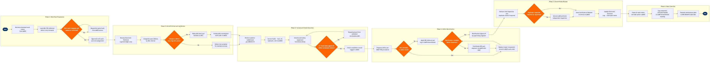

| Step | L4 Step Name | KPI / Target | Pain Point / Risk | Gate |
|---|---|---|---|---|
| 1.1 | Retrieve scheduled work orders for inbound aircraft | Work pack issued ≥4 hours before estimated aircraft arrival | Late schedule changes from network operations can invalidate pre-built work packs; AMOS work order generation requires manual re-trigger when tail swaps occur | |
| 1.2 | Load MEL/CDL deferred defect carry-forwards | 100% of Category B/C MEL items captured before aircraft arrival; zero Category A items carried forward | ETL records from outstations transmitted via ACARS can arrive incomplete; discrepancies between paper ATL and AMOS electronic record create compliance exposure | |
| 1.3 | Confirm parts, tools, and crew availability | Resource confirmation completed ≥2 hours before arrival; parts availability ≥95% for scheduled tasks | Station stock levels for consumables (O-rings, filters, fluids) are often below safety stock due to demand spikes; AMOS min/max reorder logic not consistently tuned per station size | ⚠ |
| 2.1 | Receive Electronic Technical Log from flight crew | ETL handover completed within 10 minutes of blocks-on; 100% of defects transferred to AMOS within 15 minutes | EFB-to-MRO system integration gaps require manual re-keying of defects into AMOS at some stations, introducing transcription risk and adding 10–15 minutes to turnaround | |
| 2.2 | Categorise open defects by MEL interval and severity | Defect categorisation completed within 5 minutes of ETL receipt; zero mis-categorisations identified at next audit | Engineers at outstations may lack current AMM/MEL revision; AMOS does not auto-flag MEL revision mismatches between aircraft effectivity and loaded document version | |
| 2.3 | Assess Category A defects and trigger AOG response | AOG notification to MCC within 5 minutes of Category A identification; AOG rectification plan confirmed within 30 minutes | MCC visibility of real-time station technician availability is limited; AOG coordination relies on phone bridge rather than integrated workforce management, causing delays during high-disruption events | ⚠ |
| 3.1 | Perform exterior walkaround inspection per AMM 05-10 | Walkaround completed within 15 minutes of blocks-on; defect detection rate benchmarked against fleet average | Short turnaround windows (25–45 min at focus cities) compress walkaround time; pressure to dispatch on-time can lead to incomplete checks — a known FAA audit finding category | |
| 3.2 | Service aircraft fluids — fuel, engine oil, hydraulic, LOX | Engine oil consumption ≤0.3 qt/hr per engine; hydraulic fluid level within limits; LOX quantity per MEL minimum | High oil consumption trending on CFM56-7B engines requires tracking against CAMP trend monitoring; deferred oil top-ups due to short turns inflate consumption variance and can trigger premature engine shop visit | |
| 3.3 | Complete avionics and safety equipment functional checks | 100% of safety-critical checks (fire detection, ELT, emergency lighting) signed off before departure; zero open avionics items departing without MEL disposition | Some avionics functional checks require aircraft power-up with full flight deck crew, creating coordination bottleneck during short turns; no automated power-on sequencing tool integrated with AMOS task card sign-off | |
| 3.4 | Verify all turnaround check items signed off | All transit check items signed off ≥10 minutes before scheduled departure; ground time extension rate <5% of transits | AMOS task card sign-off visibility is station-level only; MCC cannot see real-time completion percentage across all active turns without custom Tableau dashboard — gap identified in 2024 operational review | ⚠ |
| 4.1 | Diagnose defect per AMM/TSM fault isolation procedures | Fault isolation completed within 30 minutes for 80% of line defects; correct-fix-first-time rate ≥92% | TSM procedures for avionics LRUs require BITE readout from centralised maintenance computer, which is unavailable to AMTs without Airbus/Boeing tooling licences at some outstations | |
| 4.2 | Check station stock and raise parts demand in AMOS | Parts issued within 20 minutes for in-stock items; AOG order placed within 15 minutes of stock-out confirmation | AMOS inventory sync with SAP S/4HANA Finance for parts valuation runs on 4-hour batch cycle; real-time availability data not always reflected, leading to manual phone confirmation with stores | ⚠ |
| 4.3 | Apply MEL deferral if part unavailable within turn | MEL deferral completed and documented within 20 minutes of stock-out decision; deferred defect interval compliance 100% at next station | CAMP airworthiness record and AMOS open defect record are maintained in parallel without bidirectional sync; duplicate data entry risk creates interval tracking errors identified in FAA surveillance programmes | |
| 4.4 | Verify rectification completed before departure | Rectification confirmed ≥15 minutes before scheduled departure for 90% of defects; gate hold rate due to maintenance <2% of departures | MCC must coordinate between AMOS (maintenance status) and Amadeus AMS (gate/departure status) via manual phone bridge; no unified operations dashboard causes coordination lag during peak disruption periods | ⚠ |
| 5.1 | Perform final inspection and duplicate check if required | Duplicate inspection rate 100% for required work scopes; zero departures with open duplicate inspection requirement | Identifying which tasks legally require duplicate independent inspection is not automated in AMOS task card setup; relies on engineer knowledge and MOE references, creating inconsistency across station experience levels | ⚠ |
| 5.2 | Issue Certificate of Release to Service in AMOS | CRS issued ≥10 minutes before scheduled departure; 100% of CRS entries include mandatory regulatory fields per Part-145/FAR 43 | AMOS CRS module requires manual licence validity check; no real-time integration with national aviation authority (NAA) licence database means expired or scope-exceeded authorisations are only caught during audits | |
| 5.3 | Update Electronic Technical Log and close open items | ETL closed within 5 minutes of CRS; zero discrepancies between AMOS work order record and ETL at post-flight audit | FliteDeck ETL and AMOS work order closure are separate manual entries with no automated reconciliation; discrepancies create compliance findings during IOSA audits and require costly manual reconciliation | |
| 6.1 | Close all work orders and task cards in AMOS | 100% of work orders closed within 2 hours of aircraft departure; man-hour variance vs. estimate ≤15% | Actual man-hour capture at line stations is often done retrospectively and inaccurately; affects MRO cost modelling and future work scope estimates in AMOS planning module | |
| 6.2 | Log component removals and installations in CAMP | 100% of life-limited parts (LLPs) and hard-time components logged within 4 hours of installation; zero untracked LLP removals per CAMP audit | Manual entry of component records into CAMP is error-prone at outstations; LLP tracking errors can result in components exceeding overhaul limits — a direct airworthiness risk with significant FAA fine exposure | |
| 6.3 | Transmit maintenance data to central MRO analytics platform | Data transmission latency <30 minutes post work order closure; data completeness score ≥98% per monthly reliability report | AMOS-to-AWS data pipeline relies on scheduled batch exports rather than real-time streaming; 4–6 hour data lag means MCC reliability dashboards do not reflect same-day defect trends during disruption events |